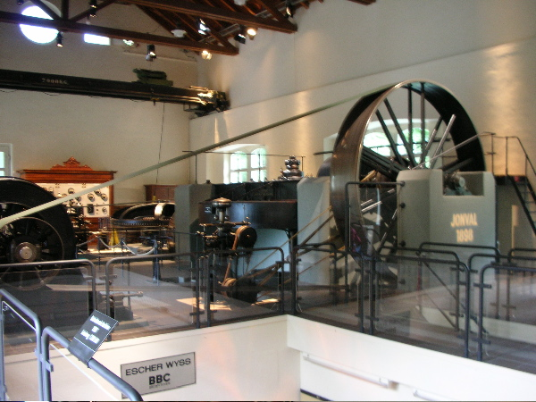

Programm Klassentag 3g
20. August 2007
8:15 Besammlung Tramstation Bahnhofquai Zürich HB
8:19 Abfahrt mit Tram 13 bis Winzerstrasse, kurzer Fussmarsch zur Werdinsel, lösen Sie das Trambillett selbst (Tageskarte).
(Wer in Höngg wohnt, kann direkt zur Winzerstrasse kommen. Das Tram trifft 8:39 dort ein.)
Die Führung beginnt um 09:00 beim Höngger Wehr am Windrad. Sie dauert bis Mittag inkl. ein vom EWZ offerierter Snack.
Lageplan: www.stadt-zuerich.ch/internet/ewz/home/erlebnisenergie/kw_hoengg.html
Ein Teil der neuen Klasse 3g
Unser Führer beim Höngger Wehr (das vorher unterquert hatten).
Eine alte Turbine

Rechen vor dem Turbinenhaus

Das Innere des Turbinenhauses mit historischen Maschinen (die aber noch funktionieren)
Nachmittag: Billardspielen (Schlechtwettervariante)
last update: 7. Oktober 2007 / Lie.